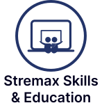
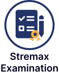
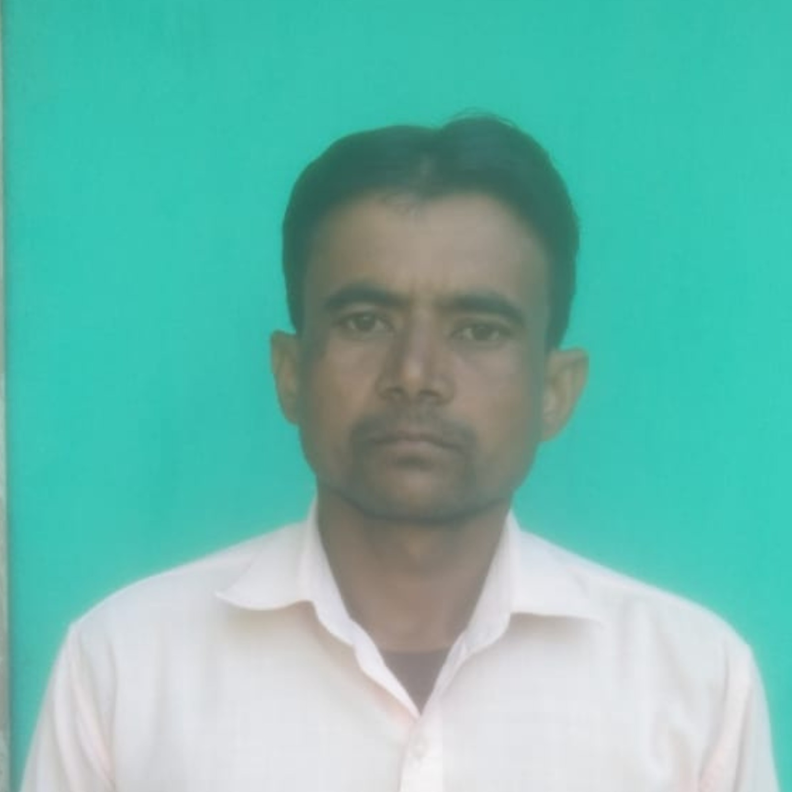
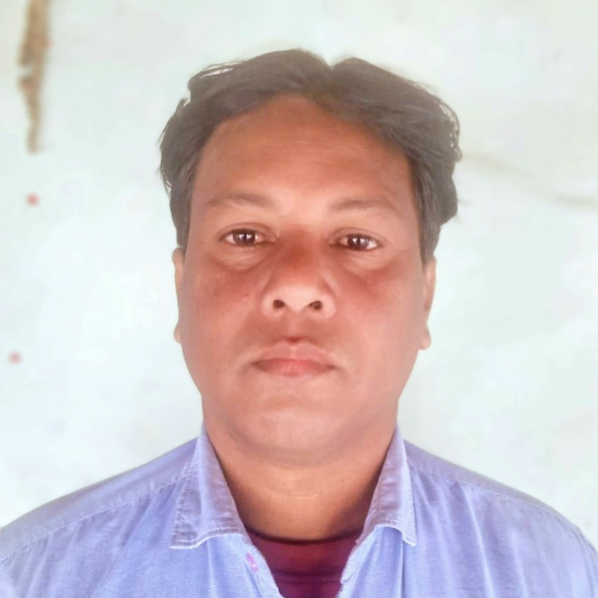
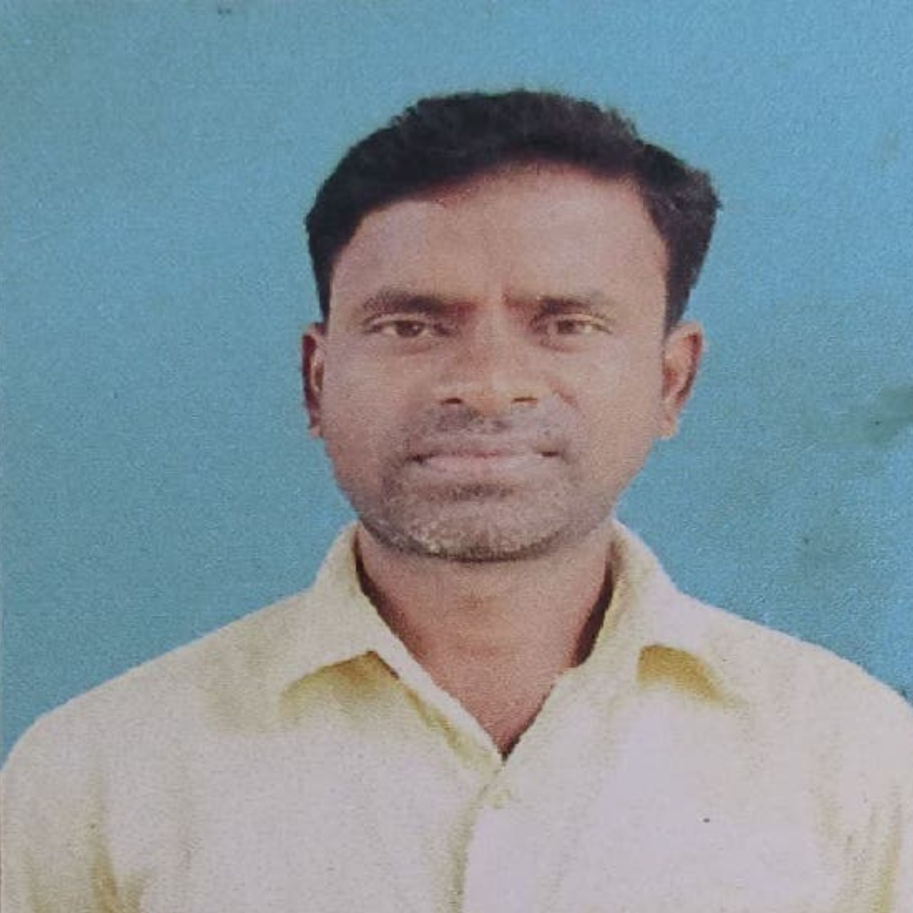

Join Stremax Foundation – Transform Education in Jharkhand!
Stremax Foundation seeks District/Block Coordinators. Part-time, remote work. Earn ₹10K-50K/month. Minimum 12th/Graduate required.
Apply NowSTREMAX FOUNDATION : एक संक्षिप्त परिचय
Stremax Foundation मिनिस्ट्री ऑफ कॉरपोरेट अफेयर्स, भारत सरकार से पंजीकृत सेक्शन-8 कंपनी-(NGO) है। यह एक गैर लाभकारी संगठन है, जो कि पूर्णरूपेण शिक्षा के प्रति समर्पित है। इसका ऑफिस भारत माता चौक, नियर कोनार पूल, हजारीबाग, झारखंड में है। NGO की स्थापना ग्रामीण एवं पिछड़े बच्चों के बीच प्रतियोगिता की भावना विकसित करने एवं स्कूली शिक्षा से टूटे विद्यार्थियों को पुनः जोड़ने के उद्देश्यों के साथ की गयी है। इसके संस्थापक शिक्षाविद एवं लेखक बिपिन कुमार हैं। वहीं पंकज साव इसके निदेशक एवं सीएमओ हैं। इसकी स्थापना दिसंबर 2023 में हुई है। स्थापना समय से लेकर अब तक निम्न कार्य एवं उपलब्धियां रहीं हैं।
- चार विद्यार्थियों को एक - एक लाख की छात्रवृत्ति का वितरण
- दर्जन विद्यार्थियों को लैपटॉप प्रदान करना।
- बीस विद्यार्थियों को टैब प्रदान करना।
- बीस विद्यार्थियों को एंड्रॉयड मोबाइल प्रदान करना।
- बीस विद्यार्थियों को टैब प्रदान करना।
- दो सौ से अधिक विद्यार्थियों को स्कूल बैग प्रदान करना।
- पांच हजार से अधिक विद्यार्थियों को मेडल और प्रशस्ति पत्र देकर सम्मानित करना।
- हजारीबाग, चतरा, कोडरमा, रामगढ़ एवं लातेहार के सैकड़ों स्कूल, कॉलेज एवं शिक्षण संस्थानों में विद्यार्थियों के बीच मोटिवेशनल एवं करियर से संबंधित सेमिनार का आयोजन ।
(यह आंकड़ा दिसम्बर 2025 तक की है। यह मुहिम जारी है।)
Apply Now
Stremax Foundation के परियोजना विवरण


Position Overview
(PART TIME & REMOTE WORK)
जिला समन्वयक
Transform Education in Jharkhand!
₹30,000 - ₹50,000 per month*
बिहार, छत्तीसगढ़, झारखंड, मध्य प्रदेश, उत्तर प्रदेश के सभी जिले
Apply Nowप्रखंड समन्वयक
Transform Education in Jharkhand!
₹10,000 - ₹20,000 per month*
बिहार, छत्तीसगढ़, झारखंड, मध्य प्रदेश, उत्तर प्रदेश के सभी प्रखंड
Apply Nowजुड़ें Stremax Foundation के साथ और बनें बदलाव का हिस्सा!
Become a District/Block Coordinator – Part-Time, Remote, Impactful Work
Apply Nowपरियोजना विवरण, समन्वयकों के कार्य एवं जिम्मेवारियां
हमारा NGO निम्न पांच शैक्षणिक परियोजनाओं पर कार्य कर रहा है:
Stremax Scholar

विजन: छात्रों को प्रतिस्पर्धी परीक्षाओं के लिए तैयार करना और उनकी शैक्षणिक प्रतिभा को पहचान कर पुरस्कृत करना। मिशन: राज्य स्तरीय छात्रवृत्ति परीक्षा (SSSE) और मासिक ऑनलाइन क्विज़ ( stremax scholar apps) के माध्यम से सतत मूल्यांकन प्रदान करना, ताकि मेधावी छात्रों को आर्थिक सहायता और पहचान मिल सकें।
प्रोजेक्ट पर कार्य एवं जिम्मेवारियां
प्रखंड समन्वयक
- Scholarship Exam के लिए अपने प्रखंड के सभी स्कूल, इंटर कॉलेज, कोचिंग, ट्यूशन सेंटर एवं अन्य शिक्षण केंद्र से संपर्क स्थापित करना। छात्रों का पंजीकरण करवाने में मदद करना, जागरूकता फैलाना एवं परीक्षा का सफल आयोजन हेतु फाउंडेशन का हाथ बांटना।
- परीक्षा संचालन में आरंभ से अंत तक आने वाले समस्त कार्यों में अपनी भागीदारी एवं सहयोग प्रदान करना। (परीक्षा फॉर्म भरवाने से लेकर पुरस्कार वितरण समारोह तक अपना सहयोग।)
- अपने प्रखंड के इस प्रोजेक्ट से संबंधित साप्ताहिक, मासिक एवं मासिक सामान्य एवं प्रगति रिपोर्ट जिला समन्वयक को सौंपना।
- इस प्रोजेक्ट से संबंधित जिला समन्वयक के आदेशों को मानना।
प्रोजेक्ट पर कार्य एवं जिम्मेवारियां
जिला समन्वयक
- उपरोक्त प्रोजेक्ट का क्रियान्वयन अपने जिला में जिला समन्वय प्रखंड समन्वयको के माध्यम से संचालित करेंगे।
- प्रखंड समन्वयको का निर्देशन, मार्गदर्शन एवं सहायता करेंगे और इसके लिए प्रशिक्षण एवं मीटिंग आयोजित करेंगे।
- प्रखंड समन्वयको से साप्ताहिक, मासिक एवं वार्षिक कार्य रिपोर्ट लेंगे एवं फाउंडेशन के ऑफिस में सौंपेंगे।
Stremax Career Counselling & Admission Guidance

विजन: छात्रों को उनकी रुचि और क्षमता के आधार पर सही करियर मार्ग चुनने में सहायता करना। मिशन: स्कूलों और कॉलेजों में करियर परामर्श सत्र आयोजित करना और उच्च शिक्षा/प्रवेश के लिए विश्वसनीय मार्गदर्शन प्रदान करना।
प्रोजेक्ट पर कार्य एवं जिम्मेवारियां
प्रखंड समन्वयक
- विद्यार्थियों की काउंसलिंग की व्यवस्था करना - छात्रों की रुचि और क्षमता समझने में मदद करना सही करियर विकल्प सुझाना, कोर्स, कॉलेज और करियर पाथ की जानकारी उपलब्ध कराना।
- कॉलेज/यूनिवर्सिटी से संपर्क बनाए रखना - विभिन्न कॉलेजों और संस्थानों के साथ नेटवर्क बनाना उनके एडमिशन प्रक्रिया, फीस, स्कॉलरशिप आदि की अपडेटेड जानकारी रखना। छात्रों के लिए सीट/क्वोटा/डिस्काउंट जैसी सुविधाएँ फाइनल कराना।
- एडमिशन प्रक्रिया में सहायता- फॉर्म भरवाना, काउंसलिंग और इंटरव्यू की तैयारी करवाना। आवश्यकता पड़ने पर सेमिनार और वर्कशॉप का आयोजन करवाया।
- करियर अवेयरनेस सेशन- मोटिवेशनल सेशन, कॉलेजों के प्रतिनिधियों के साथ इंटरएक्टिव मीट एवं उनकी शंकाओं का समाधान करना।
- रिकॉर्ड और रिपोर्ट मैनेजमेंट- छात्रों के डेटा का मेंटेनेंस, एडमिशन प्रोग्रेस रिपोर्ट तैयार करना।
- संस्था/फाउंडेशन के लिए ब्रांड प्रमोशन- सोशल मीडिया पर करियर और एडमिशन गाइडेंस से जुड़ी पोस्ट डालना। बैनर, पोस्टर, कंटेंट तैयार करवाना छात्रों को संस्था के कार्यक्रमों से जोड़ना आदि।
प्रोजेक्ट पर कार्य एवं जिम्मेवारियां
जिला समन्वयक
- उपरोक्त प्रोजेक्ट का क्रियान्वयन अपने जिला में जिला समन्वयक प्रखंड समन्वयको के माध्यम से संचालय करेंगे।
- प्रखंड समन्वयको का निर्देशन, मार्गदर्शन एवं सहायता करेंगे और इसके लिए प्रशिक्षण एवं मीटिंग आयोजित करेंगे।
- प्रखंड समन्वयको से साप्ताहिक, मासिक एवं वार्षिक कार्य रिपोर्ट लेंगे एवं फाउंडेशन के ऑफिस में सौंपेंगे। सफल विद्यार्थियों को फाउंडेशन द्वारा मार्कशीट एवं प्रमाणपत्र प्रदान करना।
- इस प्रोजेक्ट से संबंधित जिला समन्वयक के आदेशों को मानना।
Stremax Council of Skill & Professional Education

विजन: युवाओं को रोज़गारपरक व्यावसायिक कौशल प्रदान करना। मिशन: विभिन्न तकनीकी और गैर-तकनीकी क्षेत्रों में शॉर्ट-टर्म सर्टिफिकेट और व्यावसायिक पाठ्यक्रम संचालित करना।
प्रोजेक्ट पर कार्य एवं जिम्मेवारियां
प्रखंड समन्वयक
- प्रखंड में संचालित बिना रजिस्ट्रेशन एवं मान्यता प्राप्त प्रशिक्षण संस्थानों जैसे कंप्यूटर प्रशिक्षण सेंटर, अमीन सेंटर, ब्यूटीशियन सेंटर एवं इसी प्रकार के प्रशिक्षण अन्य संस्थाओं को अपने काउंसिल से अफ़िलेशन के किए प्रपोजल देना।
- आधुनिक एवं व्यवसायिक प्रशिक्षण कोर्स जो हमारे द्वारा या हमसे अफ़लेशन लिए संस्थाओं से संचालित हो इसमें विद्यार्थियों एवं इच्छुक को जुड़ने में मदद करना।
- अफ़िलेशन से जुड़े प्रशिक्षण संस्थाओं का कॉर्स वाइज पाठ्यक्रम के अनुसार के तीन - तीन महीना पर परीक्षा आयोजित करवाना।
प्रोजेक्ट पर कार्य एवं जिम्मेवारियां
जिला समन्वयक
- उपरोक्त प्रोजेक्ट का क्रियान्वयन अपने जिला में जिला समन्वय प्रखंड समन्वयको के माध्यम से संचालय करेंगे।
- प्रखंड समन्वयको का निर्देशन, मार्गदर्शन एवं सहायता करेंगे और इसके लिए प्रशिक्षण एवं मीटिंग आयोजित करेंगे।
- प्रखंड समन्वयको से साप्ताहिक, मासिक एवं वार्षिक कार्य रिपोर्ट लेंगे एवं फाउंडेशन के ऑफिस में सौंपेंगे।
- सफल विद्यार्थियों को फाउंडेशन द्वारा मार्कशीट एवं प्रमाणपत्र प्रदान करना। इस प्रोजेक्ट से संबंधित जिला समन्वयक के आदेशों को मानना।
Stremax Publication

विजन: गुणवत्तापूर्ण, सस्ती और पाठ्यक्रम-केंद्रित अध्ययन सामग्री उपलब्ध कराना। मिशन: छात्रों, शिक्षकों और संस्थानों के लिए पुस्तकें, गाइड, हेल्प बुक्स और कॉपी/स्टेशनरी सामग्री का प्रकाशन और वितरण करना।
प्रोजेक्ट पर कार्य एवं जिम्मेवारियां
प्रखंड समन्वयक
- PUBLICATION से जुड़े सर्विसेज एवं प्रकाशित नए किताबों के लिए अपने प्रखंड के सभी स्कूल, कॉलेज, कोचिंग, ट्यूशन सेंटर एवं अन्य शिक्षण केंद्र से संपर्क स्थापित करना एवं अपने सुविधा एवं सर्विसेज से रू-बरु कराना।
- जरूरतमंद स्कूल, कॉलेज, कोचिंग एवं अन्य शिक्षण संस्थानों के इस प्रोजेक्ट से जुड़ी सेवाओं के आएं ऑर्डर/डिमांड को पूरा करना।
प्रोजेक्ट पर कार्य एवं जिम्मेवारियां
जिला समन्वयक
- उपरोक्त प्रोजेक्ट का क्रियान्वयन अपने जिला में जिला समन्वयक, प्रखंड समन्वयको के माध्यम से संचालित करेंगे।
- प्रखंड समन्वयको का निर्देशन, मार्गदर्शन एवं सहायता करेंगे और इसके लिए प्रशिक्षण एवं मीटिंग आयोजित करेंगे।
- प्रखंड समन्वयको से साप्ताहिक, मासिक एवं वार्षिक कार्य रिपोर्ट लेंगे एवं फाउंडेशन के ऑफिस में सौंपेंगे।
Stremax Examination Agency

विजन: अन्य संस्थानों और सरकारी एजेंसियों के लिए विश्वसनीय और सुरक्षित परीक्षा संचालन सेवाएँ प्रदान करना। मिशन: परीक्षा आयोजित करने, परिणाम तैयार करने और प्रमाणन में विशेषज्ञता प्रदान करके निष्पक्षता सुनिश्चित करना। यह सरकारी एवं गैर सरकारी संस्थानों का भर्ती परीक्षा, प्रवेश परीक्षा,चयन परीक्षा, क्विज परीक्षा एवं किसी भी प्रकार के शैक्षणिक परीक्षा करवाने वाली एजेंसी हैं। हमारा उद्देश्य संबंधित निकायों के लिए पारदर्शी और व्यवस्थित परीक्षाएं आयोजित करना है।
प्रोजेक्ट पर कार्य एवं जिम्मेवारियां
प्रखंड समन्वयक
- अपने क्षेत्र में संचालित किसी भी प्रकार के शिक्षण संस्थाओं में भर्ती परीक्षा, प्रवेश परीक्षा, चयन परीक्षा, क्विज परीक्षा एवं किसी भी प्रकार के शैक्षणिक परीक्षा करवाने से संबंधित प्रपोजल के बारे में बताना एवं अपने सेवाओं का विस्तार करना।
- इस प्रोजेक्ट से संबंधित परीक्षा को संचालित करने में अपनी भूमिका निभाना। इस प्रोजेक्ट से संबंधित जिला समन्वयक के आदेशों को मानना।
प्रोजेक्ट पर कार्य एवं जिम्मेवारियां
जिला समन्वयक
- उपरोक्त प्रोजेक्ट का क्रियान्वयन अपने जिला में जिला समन्वयक प्रखंड समन्वयको के माध्यम से संचालय करेंगे।
- प्रखंड समन्वयको का निर्देशन, मार्गदर्शन एवं सहायता करेंगे और इसके लिए प्रशिक्षण एवं मीटिंग आयोजित करेंगे।
- प्रखंड समन्वयको से साप्ताहिक, मासिक एवं वार्षिक कार्य रिपोर्ट लेंगे एवं फाउंडेशन के ऑफिस में सौंपेंगे।
उपरोक्त परियोजनाओं से लाभ
- छात्रवृत्ति
- सही करियर मार्गदर्शन
- सस्ती किताबें
- कौशल विकास
- शैक्षणिक गुणवत्ता में सुधार
- ब्रांडिंग और
- छात्रों का बेहतर प्रदर्शन
- बच्चों के भविष्य के प्रति निश्चिंतता
- और कम खर्च में बेहतर शिक्षा
- साक्षरता दर में वृद्धि
- बेरोजगारी में कमी और
- एक शिक्षित व विकसित राज्य का निर्माण।
Our Work
Numbers Speak For Us
₹1M+
Scholarship Distributed100+
Digital Literacy Gadget Distributed500+
School Bag Distributed20,000+
Student Impacted60+
Team StrengthSuccess Stories/Testimonials
Reviews given by our past District and Block Coordinators
"स्ट्रेमैक्स फाउंडेशन के साथ काम करना मेरे लिए गर्व की बात है। यहाँ का कार्य वातावरण बहुत ही सकारात्मक है और टीम के हर सदस्य के सुझाव को महत्व दिया जाता है। शिक्षा के क्षेत्र में बदलाव लाने का हमारा जुनून ही हमारी ताकत है।"
"एक टीम मेंबर के तौर पर मुझे यहाँ बहुत कुछ नया सीखने को मिला है। खासकर ग्रामीण क्षेत्रों में शिक्षा और छात्रवृत्ति (SSSE) के माध्यम से बच्चों के भविष्य को संवारने का अनुभव अद्भुत है। यह सिर्फ एक जॉब नहीं, एक मिशन है।"
"हजारीबाग में शिक्षा और करियर काउंसलिंग (Project Margdarshan) के लिए स्ट्रेमैक्स फाउंडेशन से बेहतर कोई मंच नहीं है। हमारी पूरी टीम पारदर्शिता और पूरी ईमानदारी के साथ समाज की सेवा में जुटी हुई है।"
"संस्था के प्रबंधन और विजनरी लीडरशिप के साथ काम करना बहुत प्रेरणादायक है। टीम के बीच आपसी सहयोग और साझा लक्ष्य हमें हर दिन बेहतर करने के लिए प्रेरित करता है।"

"मैं इस टीम का हिस्सा हूँ और मैंने करीब से देखा है कि कैसे हमारी छात्रवृत्ति योजनाएं और शिक्षक सम्मान समारोह समाज में सकारात्मक बदलाव ला रहे हैं। शिक्षा के प्रति ऐसी निष्ठा कम ही देखने को मिलती है।"

"यदि आप वास्तव में समाज के लिए कुछ करना चाहते हैं, तो स्ट्रेमैक्स फाउंडेशन एक बेहतरीन प्लेटफॉर्म है। एक कर्मचारी के रूप में, मुझे खुशी है कि मैं हजारीबाग और झारखंड के विकास में अपना योगदान दे पा रहा हूँ।"

"स्ट्रेमैक्स फाउंडेशन हमेशा नए और आधुनिक विचारों (जैसे करियर काउंसलिंग और डिजिटल शिक्षा) पर काम करती है। टीम के सदस्य के रूप में, मुझे अपनी स्किल्स को अपडेट करने का यहाँ भरपूर मौका मिलता है।"
"यहाँ प्रतिभा का सम्मान होता है। टीम मेंबर्स को न केवल प्रोत्साहित किया जाता है, बल्कि हमारे व्यक्तिगत विकास पर भी ध्यान दिया जाता है। काम करने के लिए यह एक शानदार जगह है।"
"मुझे गर्व है कि मैं स्ट्रेमैक्स फाउंडेशन से जुड़ा हूँ। हमारे द्वारा आयोजित 'शिक्षक सम्मान समारोह' और 'ओपन क्विज' जैसे कार्यक्रम शिक्षा के स्तर को ऊँचा उठा रहे हैं। एक बेहतरीन टीम और बेहतरीन नेक काम!"
FAQ
स्ट्रैमैक्स फाउंडेशन भारत सरकार (MCA) द्वारा पंजीकृत एक 'सेक्शन-8' NGO है, जो झारखंड में शिक्षा, छात्रवृत्ति और कौशल विकास के लिए समर्पित है।
आपको अपने ब्लॉक/जिले के स्कूलों और कोचिंग संस्थानों में फाउंडेशन के प्रोजेक्ट्स (जैसे स्कॉलर परीक्षा, टेस्ट सीरीज) का प्रचार और संचालन करना होगा।
यह एक इंसेंटिव-आधारित करियर अवसर है जहाँ आप ₹10k-₹50k कमा सकते हैं। बेहतरीन प्रदर्शन पर भविष्य में स्थायी पेरोल (Fixed Salary) का विकल्प भी मिलता है।
प्रखंड: 12वीं पास। जिला: स्नातक (Graduate)। साथ ही आपके पास एक एंड्रॉयड फोन और बाइक होना अनिवार्य है।
हाँ! चयन के बाद आपको ट्रेनिंग दी जाएगी और फाउंडेशन की ओर से ID कार्ड, बैग और डायरी (जॉइनिंग किट) प्रदान की जाएगी।
नहीं, आप अपने ही जिले या प्रखंड (Block) में रहकर काम कर सकते हैं।
बिल्कुल! अच्छे प्रदर्शन के आधार पर आपको ब्लॉक से जिला और फिर राज्य स्तर के पदों पर प्रमोट किया जाएगा।
समन्वयक बनने के लिए आवश्यक कौशल और योग्यता
Required Qualifications & Skills
- मजबूत संचार कौशल (Communication Skills) और लोगों को अपनी बात समझाने की क्षमता।
- शिक्षा के क्षेत्र में कार्य करने का जुनून और समाज सेवा की भावना।
- टीम को लीड करने की क्षमता (Leadership Quality)।
- न्यूनतम योग्यता: प्रखंड समन्वयक के लिए न्यूनतम 12वीं पास और जिला समन्वयक के लिए न्यूनतम स्नातक (Graduate) पास होना जरूरी है एवं स्थानीय क्षेत्र की भाषा एवं संस्कृति का जानकार हो।
- आवेदक के पास अपना बाइक एवं एंड्रॉयड मोबाइल अवश्य होनी चाहिए।
- शिक्षा एवं पत्रकारिकता क्षेत्र से जुड़े आवेदकों को चयन में प्राथमिकता दी जाएगी।
- जिला एवं प्रखंड समन्वयक के आवेदक संबंधित प्रखंड एवं जिला का ही निवासी होने चाहिए।
समन्वयक बनने के लाभ (Coordinator Benefits)

नियमित कमाई के अलावा, टारगेट पूरा करने पर एक्स्ट्रा रिवॉर्ड:
- मजबूत संचार कौशल (Communication Skills) और लोगों को अपनी बात समझाने की क्षमता।
- शिक्षा के क्षेत्र में कार्य करने का जुनून और समाज सेवा की भावना।
- टीम को लीड करने की क्षमता (Leadership Quality)।
- न्यूनतम योग्यता: प्रखंड समन्वयक के लिए न्यूनतम 12वीं पास और जिला समन्वयक के लिए न्यूनतम स्नातक (Graduate) पास होना जरूरी है एवं स्थानीय क्षेत्र की भाषा एवं संस्कृति का जानकार हो।
- आवेदक के पास अपना बाइक एवं एंड्रॉयड मोबाइल अवश्य होनी चाहिए।
- शिक्षा एवं पत्रकारिकता क्षेत्र से जुड़े आवेदकों को चयन में प्राथमिकता दी जाएगी।
- जिला एवं प्रखंड समन्वयक के आवेदक संबंधित प्रखंड एवं जिला का ही निवासी होने चाहिए।
जुड़ें Stremax Foundation के साथ और बनें बदलाव का हिस्सा!
- समाज की सेवा करते हुए कमाएँ।
- शिक्षा के क्षेत्र में अपना करियर बनाएँ।
- बहुमूल्य अनुभव प्राप्त करें।
- अपने समुदाय में वास्तविक प्रभाव डालें। Apply Now

.jpeg)
.jpeg)
.jpeg)
.jpeg)
.jpeg)
.jpeg)
.jpeg)
.jpeg)
.jpeg)
.jpeg)
.jpeg)
.jpeg)
.jpeg)
.jpeg)
.jpeg)
.jpeg)
.jpeg)
.jpeg)
.jpeg)
.jpeg)
.jpeg)
.jpeg)
.jpeg)
.jpeg)
.jpeg)
.jpeg)
.jpeg)
.jpeg)
चयन का आधार: फॉर्म भरने के बाद, 10-15 दिनों के भीतर आपका ऑनलाइन इंटरव्यू होगा और उस इंटरव्यू के आधार पर आपका चयन सुनिश्चित किया जाएगा।